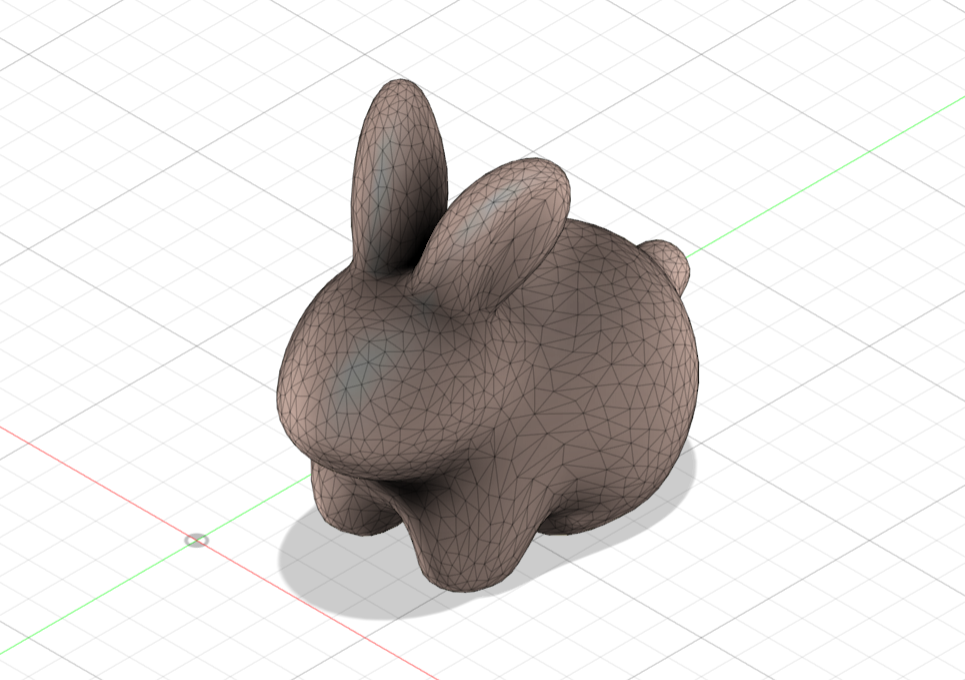
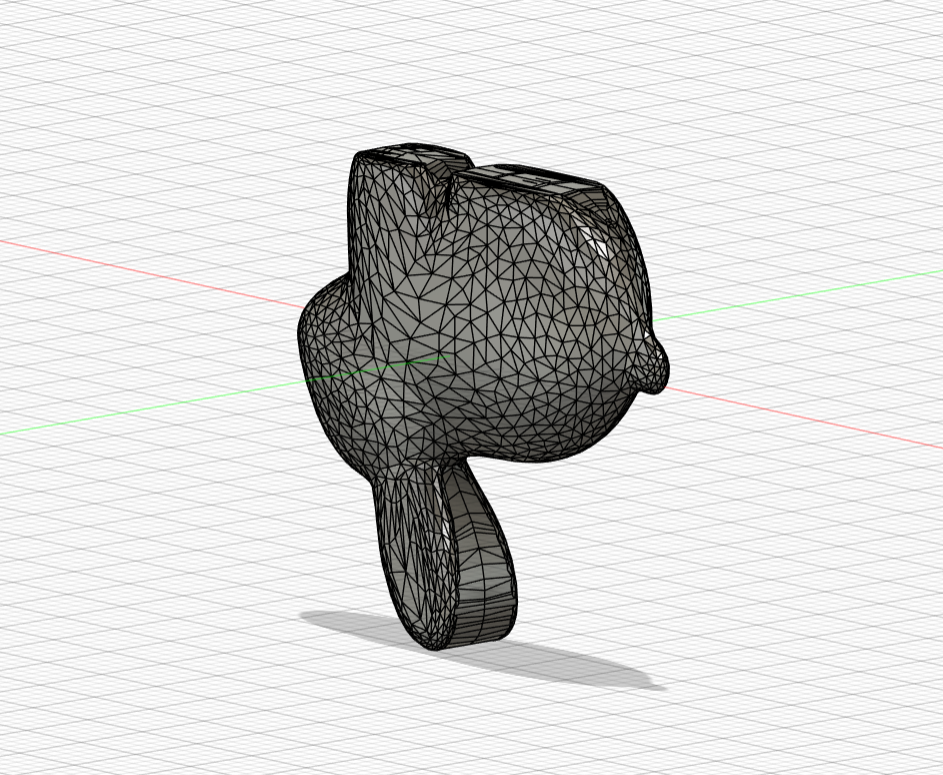
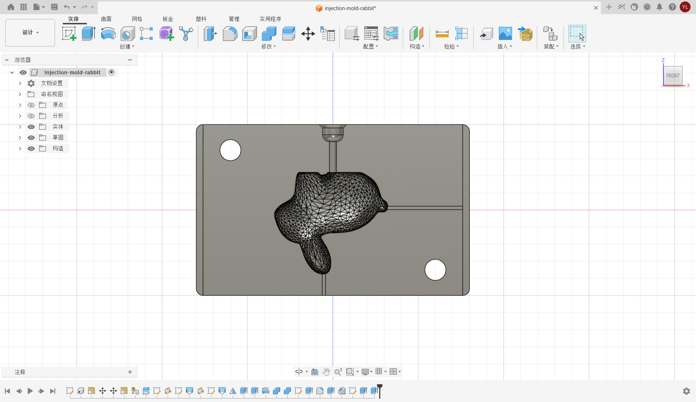
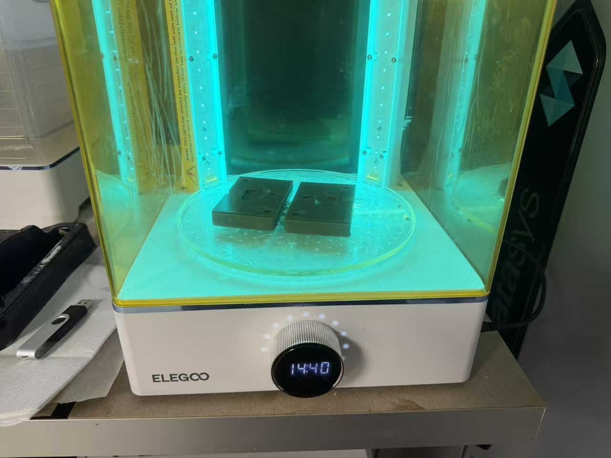
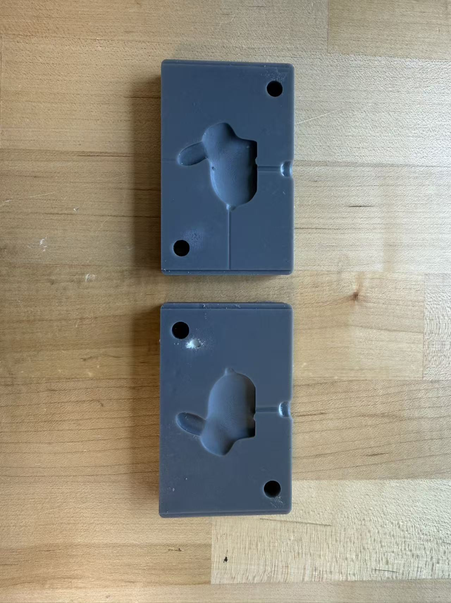
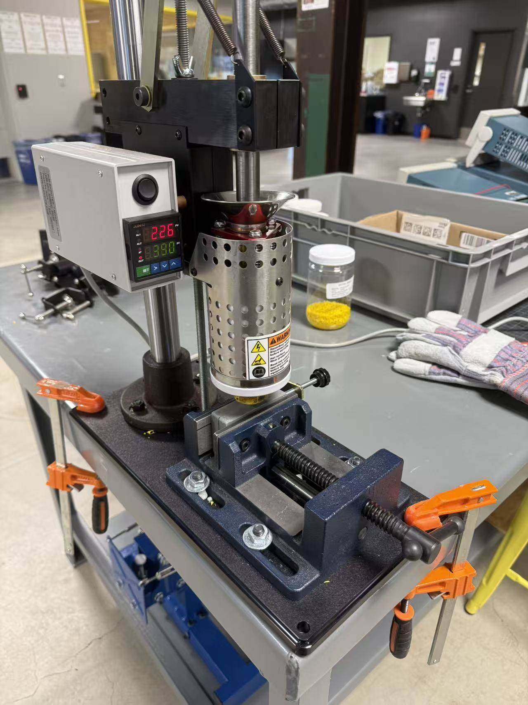
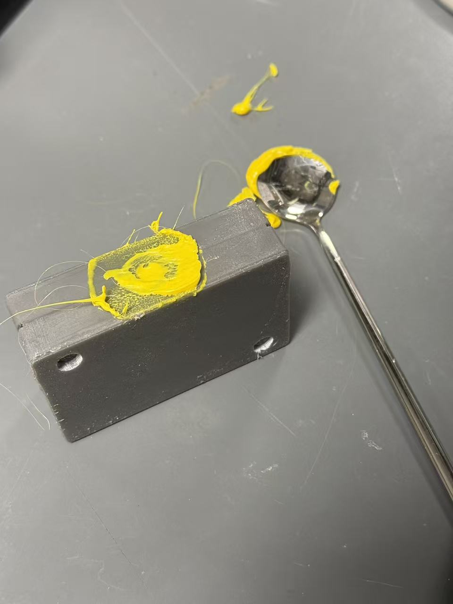
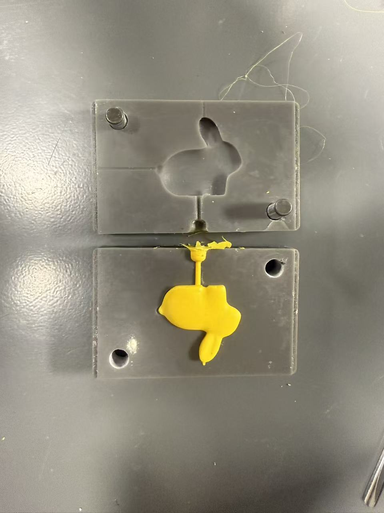
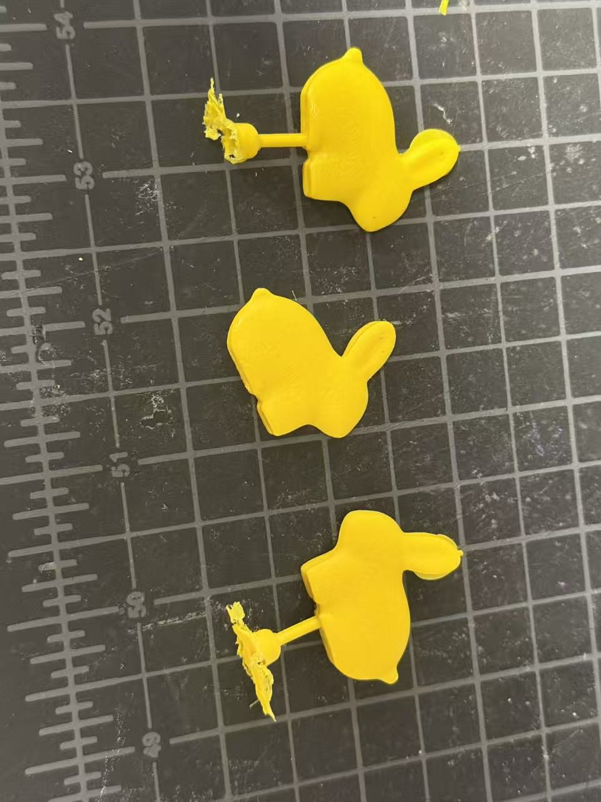

01 Overview概述
The last project — and the most industrial最后一个项目——也是最工业化的一个
The final project of the Independent Study: injection molding. The overall process is fairly straightforward — design the mold, SLA-print it, inject plastic. Three steps, clean and industrial.
独立研究的最后一个项目：注塑。整体来说流程相当简单——设计模具、SLA打印模具、注塑。三步走，干净利落。
I chose a cute rabbit as the target. Getting the mold geometry right — especially the parting line and avoiding undercuts — turned out to require more thought than expected.
我选择了可爱的兔子作为注塑目标。把模具几何形状做对——尤其是分型面和避免undercut——事实证明比预期需要更多思考。
Materials Used使用材料
02 Process制作过程
Step by step制作步骤
Part A第 A 部分
Design & Fabrication设计与制作模型
Learning from the undercut disaster in Project 03, this time mold feasibility — especially ease of demolding — was the first thing on the checklist. And there turned out to be more to think about than just geometry.
吸取了上次的教训，这次在设计模具的时候格外注意模具的合理性，尤其是脱模的方便程度，防止产生undercuts。不过需要考虑的事情还不只是几何形状。
Fixing the undercuts修复undercut
I chose a cute rabbit as the injection target. The base model was downloaded from MakerWorld (小兔子 ↗).
我选择了可爱的兔子作为注塑的目标。原始模型从MakerWorld下载（小兔子 ↗）。

There's a problem with injection molding thick, solid models: long cooling times, and the uneven cooling rate between exterior and interior can create internal voids. So I reworked the model into a flatter shape, keeping it as thin as possible.
注塑这门工艺不太适合特别厚的实心模型：冷却时间长，还会因为内外冷却速度不均产生空腔。于是我将模型修改为更加合适的造型：压扁了，尽量做薄。
But there was still the undercut problem. If I set the parting line at the center of the model, the recesses between the rabbit's ears and feet would create undercuts. The parting line must be at the widest cross-section — so I laboriously reworked the mesh in Fusion, merging the left and right ears together and doing the same for the feet, making the middle the widest point all around.
但是问题仍然存在：如果把分型面定在正中间，兔子耳朵和双脚之间的凹陷会形成undercuts。分型面一定要在最宽处——于是我用Fusion艰难地修复了这个网格模型，将左右耳朵和双脚分别缝合在了一起，使得中间的分型面最宽。

Gate, vents, and alignment pins进料口、排气槽和定位柱
For an injection mold, a gate is required — the inlet through which molten plastic enters the cavity. As the melt rushes in, it pushes the air already in the cavity ahead of it. That air needs somewhere to escape: that's what vent slots are for.
对于注塑模具，需要预留出进料口：顾名思义，融化的材料进入模具的入口。熔料往里冲的时候，会把型腔里原本的空气往前推，而空气总得有地方出去，这便是排气槽的用处。
Vent slots should be as shallow as possible — just deep enough for air to escape but not wide enough for melt to squeeze through — and they open at the last point the melt reaches. The gate should be as funnel-shaped as possible to guide the melt smoothly into the cavity.
排气槽尽量浅，以防止熔料溢出，从熔料最后流动到的地方开口；进料口则是尽可能类似于漏斗形状，方便熔料进入模具内部。
My vent slots are only 0.2 mm deep — and they actually printed cleanly because SLA's layer resolution is high enough to handle features at that scale. The same slots would be difficult or impossible to achieve on a standard FDM printer.
我的排气槽只做了 0.2 mm 深——之所以能顺利打印出来，是因为SLA的精度足够高，可以还原这个尺度的细节。如果换成普通FDM，这样的排气槽会很难实现。

Two holes were placed at diagonal corners to accept steel alignment pins, keeping the two mold halves precisely registered during injection.
在斜对角打了两个孔，用于插入钢柱定位，在注塑的过程中保证模具紧紧贴合。
SLA printing and post-processing打印与后处理
SLA printing, then the same post-processing as before: isopropyl alcohol wash, UV cure — 15 minutes each side.
SLA打印后，如之前一样用酒精进行清理，并照射UV光正反面各15min固化树脂。

One small snag: SLA resin shrinks slightly after printing, so the 0.2 mm tolerance I left for the alignment pin holes turned out to be too tight. I had to open them up a bit with a metal tool afterward.
这里有一点问题：树脂打印后似乎有一些收缩，所以为定位柱预留的公差（0.2mm）有点小了，后续又用金属工具打磨扩大了一些。

Part B第 B 部分
Injection Molding注塑
GIX has a desktop injection molding machine, clamped to a workbench. It can reach temperatures up to 400°C, so thick insulated gloves are mandatory to avoid burns.
GIX有的是一个桌面级的注塑机，用定位的夹子固定在桌子上。注塑机使用时可能会达到400度的高温，所以为了安全考虑，需要带上厚厚的隔热手套防止烫伤。

Calibration and setup定位校准与安装
Before running, the machine needs to be calibrated so the nozzle aligns perfectly with the gate. This is done by adjusting four screws for forward/backward position, a long screw for left/right offset, and a set of screws for the overall height off the bench. Once aligned, the mold is locked into the clamp fixture at the base and you're ready to go.
在使用之前，需要进行定位校准，使得注塑机的出料口对准模具的进料口。这通过4个固定的螺丝来修改前后距离，用一根长螺丝来调整模具的左右位置，以及用一组螺丝来调节机器整体距离桌面的高度。将模具放入注塑机底部的固定夹结构中锁死，便可以开始注塑了。
Injection — heat, press, wait注塑——加热、压下、等待
This session used yellow PP plastic, heated to 390°C. During heating, the temperature climbs to around 405°C then pauses and slowly settles back down to 390°C — presumably to ensure the plastic is fully molten throughout. While heating, watch the drip outlet at the bottom of the machine: any plastic that oozes out needs to be scraped off promptly with a flat metal spatula.
这次使用的材料是黄色的PP塑料，加热到390°C即可。加热时会爬升到405°C左右再暂停加热慢慢恢复390°C（确保塑料融化？）。加热的过程中需要注意注塑机下方熔料出口的塑料滴落，要适时用工具（这里用的是很平的金属勺子）刮掉。
Once the plastic is molten, press the plunger down to inject. Hold the plunger steady and feel the resistance change — when it builds up noticeably, the cavity is full. Keep the plunger pressed for another 15–30 seconds after filling to prevent the plastic from pulling back, then return the plunger to its original position and wait for the mold to cool.
待塑料融化后，压下压杆挤出融化的塑料，保持杆下压，感受力度的变化，直到阻力变大，则注塑的塑料完全充满模具的腔体。在挤压完成后，依然要保持杆下压到底的状态约15~30s，防止塑料回缩，然后将压杆复原到原位，等待模具冷却后取出。


Three rounds — the point of injection molding三次量产——这就是注塑的意义
The whole point of injection molding is repeatability. I ran three rounds. The SLA-printed mold will start degrading after around 10 uses — injection pressure gradually deforms the walls until they no longer seal, and the heat takes its toll on the SLA resin over time. But three rabbits in quick succession? That's the whole idea.
注塑模具的优势就是可以量产！我尝试了3次。不过受限于材料，SLA打印的模具大约使用10次后质量就开始下降，这主要是因为注入塑料会使得模具受到向外的压力而膨胀变形、不再密闭，也因为加热后SLA难免熔化。但是快速连产三只兔子？这就是注塑的意义。

And finally, after trimming off the gate sprue — the finished rabbit.
最后看看修剪除去进料管的兔子模型吧！
03 Knowledge Points知识点
Things to remember值得记住的事
Keep injection-molded parts thin — max ~8 mm注塑件要薄——最厚处约8mm以内
Thick, solid models are problematic for injection molding: the outside cools and solidifies while the inside is still hot, creating uneven shrinkage and internal voids. Keep the model as thin as reasonably possible — the thinner the part, the more evenly it cools and the cleaner the result.
厚实的实心模型对注塑来说很麻烦：外层冷却固化时内部还是热的，导致收缩不均、内部产生空腔。模型尽量做薄——越薄冷却越均匀，成品也越干净。
The parting line must sit at the widest cross-section分型面必须位于最宽处
Any concavity at the parting line — gaps between ears, between legs — becomes an undercut that locks the part in the mold. Set the parting line at the widest cross-section of the model, so both halves pull cleanly away. Sometimes this means modifying the model geometry (merging features) rather than just choosing a different split plane.
分型面处的任何凹陷——耳朵之间、腿之间的间隙——都会形成undercut，把零件锁死在模具里。将分型面设在模型的最宽截面处，让两半模具都能干净地脱离。有时这意味着需要修改模型几何形状（合并特征），而不仅仅是换一个分型平面。
Vents: shallow and at the far end. Gate: funnel-shaped排气槽：尽量浅，开在最远端；进料口：漏斗形
Vent slots let trapped air escape as the melt fills the cavity. Keep them shallow enough that melt can't squeeze through — they only need to pass air, not plastic. Place them at the point the melt reaches last. The gate (inlet) should be funnel-shaped to guide melt in without turbulence.
排气槽让熔料充满型腔时被困的空气得以逸出。要足够浅，让熔料无法挤入——它只需要让空气通过，而不是让塑料通过。将其开在熔料最后流动到的位置。进料口（浇口）应为漏斗形，引导熔料平稳进入，减少湍流。
Hold the plunger down for 15–30 s after filling充满后保持压杆下压15–30s
After the cavity fills and resistance rises, keep the plunger pressed for another 15–30 seconds. Releasing too early lets the still-molten plastic contract and pull back, leaving sinks or incomplete fills. Only release once the gate has solidified enough to hold the material in place.
腔体充满、阻力上升后，依然保持压杆下压约15–30s。过早松开会让尚未凝固的塑料收缩回流，留下缩痕或填充不完整。等浇口处固化到足以锁住材料后，再松开压杆。
SLA molds last about 10 shots before they failSLA模具约能用10次
Each injection cycle puts outward pressure on the mold walls, gradually deforming them until the halves no longer seal. Heat also degrades the SLA resin over time. Quality starts dropping after around 10 shots — which makes SLA molds great for rapid testing and small runs, but not for mass production. If you need volume, a machined metal mold is the right call.
每次注射循环都对模具壁施加向外的压力，逐渐变形直到两半不再密封，高温也会随时间降解SLA树脂。大约10次之后质量就开始下降——所以SLA模具非常适合快速测试和小批量，但不适合大量生产。如果需要量产，定做金属模具才是正确选择。
04 Notes & Reflection笔记与反思
What I took away我的收获
Week 9 – 10 · Spring 2026第 9 – 10 周 · 2026年春季学期
Injection molding felt different from the silicone and resin work — cleaner in some ways, more machine-dependent in others. The mold design demanded careful upfront thinking (parting line, gate, vents, tolerances), but the actual injection step was fast and satisfying: press, feel the resistance rise, hold, wait, open.
注塑和之前的硅胶、树脂工作感觉不同——某些方面更干净，某些方面更依赖机器。模具设计需要在前期认真思考（分型面、进料口、排气槽、公差），但实际注塑的那一步又快又爽：压下、感受阻力上升、保持、等待、打开。
The tolerance miss on the alignment pins was a good reminder that SLA shrinkage is real and worth accounting for. 0.2 mm sounded like a generous gap; it wasn't. Next time I'd go 0.3–0.4 mm.
定位柱公差失误是个好提醒：SLA的收缩确实存在，值得认真计入。0.2mm看起来是个不错的间隙，结果不够用。下次我会留0.3–0.4mm。
And three rabbits in a row — that's what made it click. You design once, and then you just keep pressing the plunger. For short runs and prototyping, it's hard to beat.
连续产出三只兔子的那一刻，真正理解了注塑的意义。你只需要设计一次，然后不断压杆就行了。对于小批量和原型制作，这种工艺很难被超越。
- What worked: Proactively fixing the parting line by merging model features paid off — no demolding issues. The funnel gate design let plastic flow in smoothly. Three clean shots on the first mold. 做得好的： 主动通过合并特征修复分型面起了作用——没有脱模问题。漏斗进料口让塑料顺畅流入。第一套模具顺利完成了三次注塑。
- What I'd do differently: Leave more tolerance for the alignment pins (0.3–0.4 mm instead of 0.2 mm) to account for SLA shrinkage. Watch the drip nozzle more actively during heating — scraping late is messier than scraping early. 下次会改变的： 定位柱公差留大一些（0.3–0.4mm而不是0.2mm），计入SLA收缩。加热时更主动地关注出料口——晚刮比早刮麻烦得多。
- What this taught me broadly: Injection molding rewards upfront design rigor — the mold has to be right before you run anything. But once it is, the process is remarkably repeatable. That repeatability is the whole value proposition. 更广泛的收获： 注塑奖励前期严谨的设计——模具必须在运行之前就做对。但一旦做对了，过程就极具可重复性。这种可重复性正是它的核心价值。